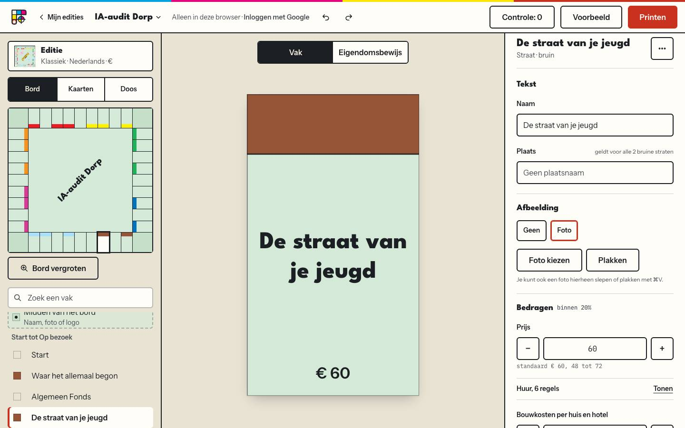
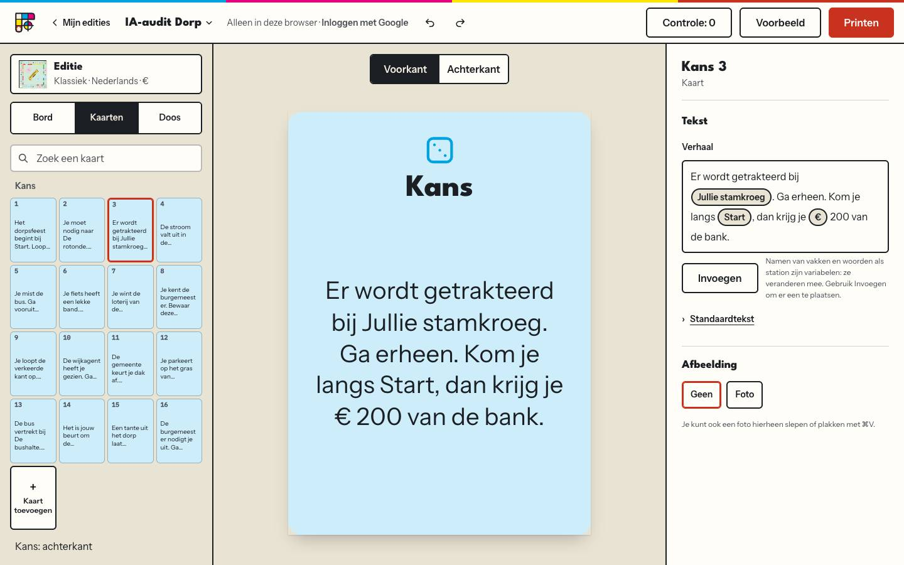
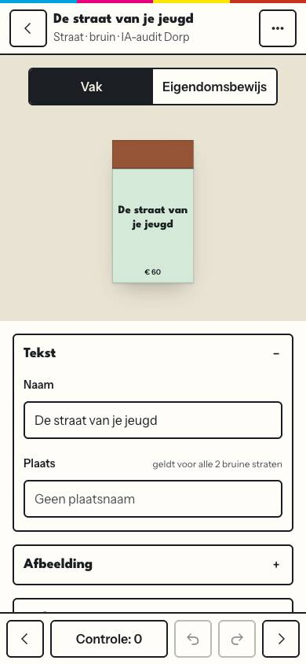
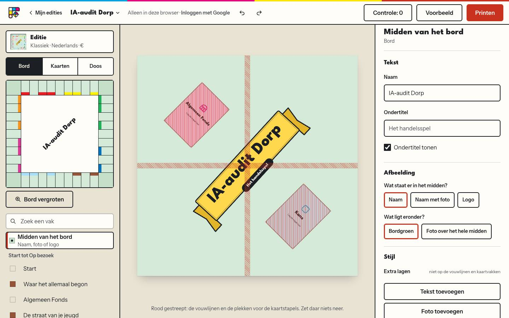

Uitnodiging
Uitnodiging · A6
Tekst van boven naar onder
Spelavond
Je bent uitgenodigd
✓Naam van de editie eronderIA-audit Dorp
Zaterdag 6 september, 20.00 uur, bij Ria
Punt 2, 11, 12 en 15 uit vindbaarheid.md. Roze stippellijn: wat verandert.

Foto… opent meteen je foto's. Slepen of plakken kan ook.

Een woord in een grijs blokje verandert mee als je het vak of het woord anders noemt.
› Standaardtekst


Wat staat er in het midden?
Wat ligt eronder?
Extra lagen niet op de vouwlijnen